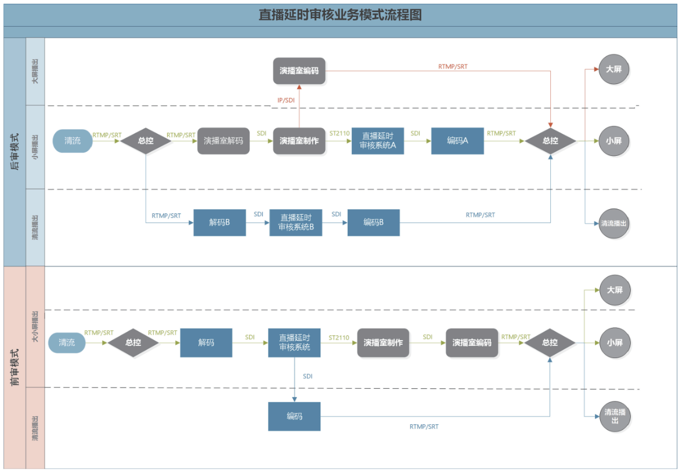
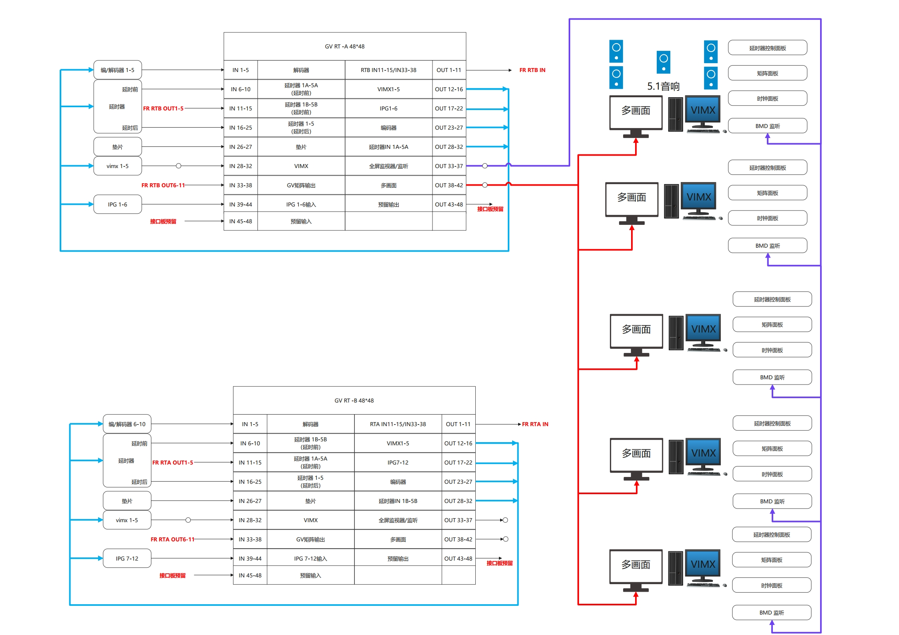
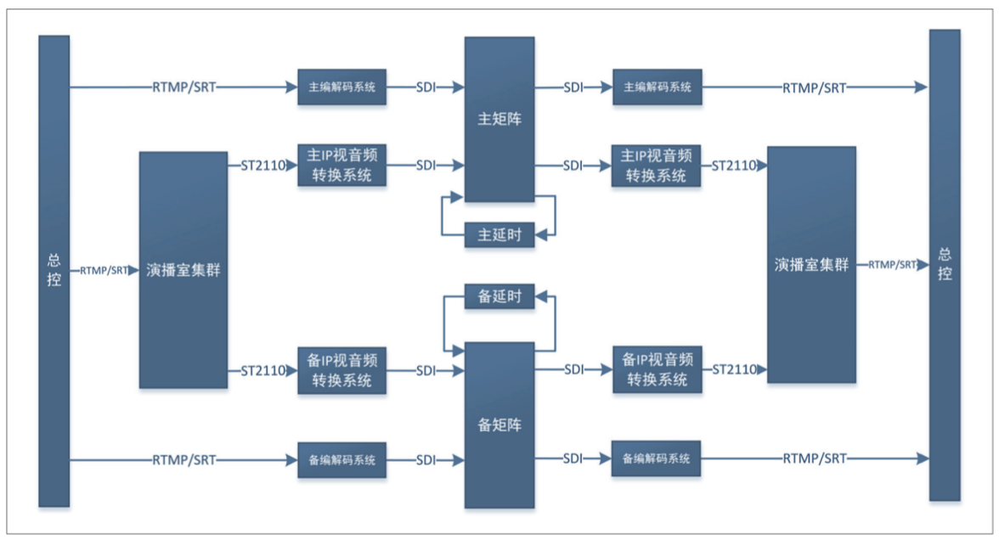
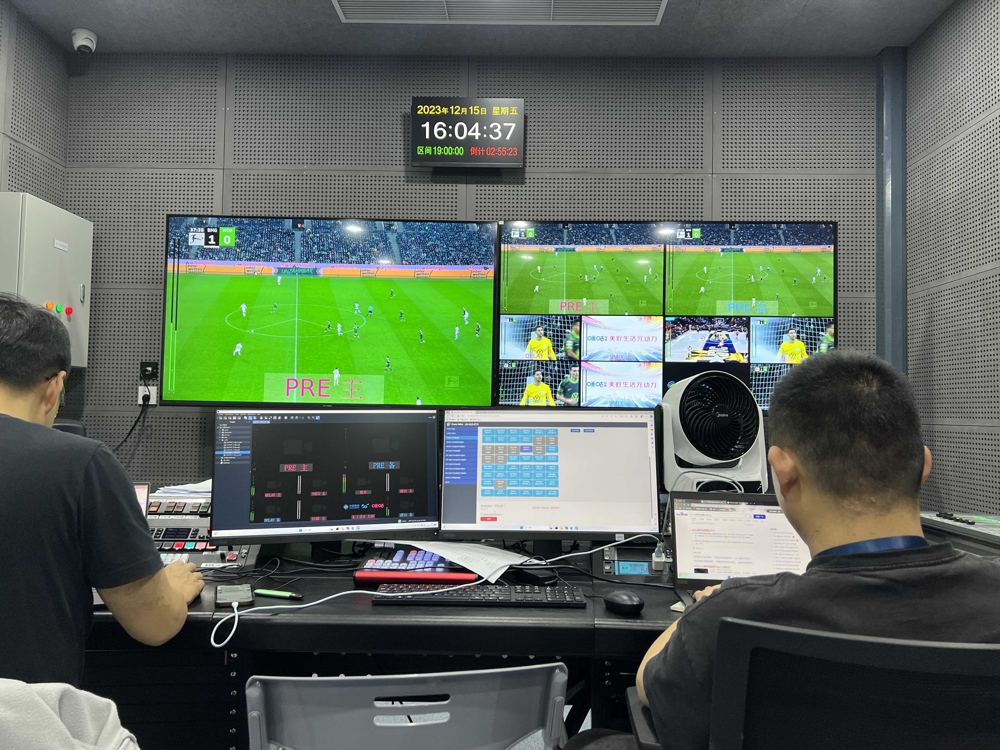
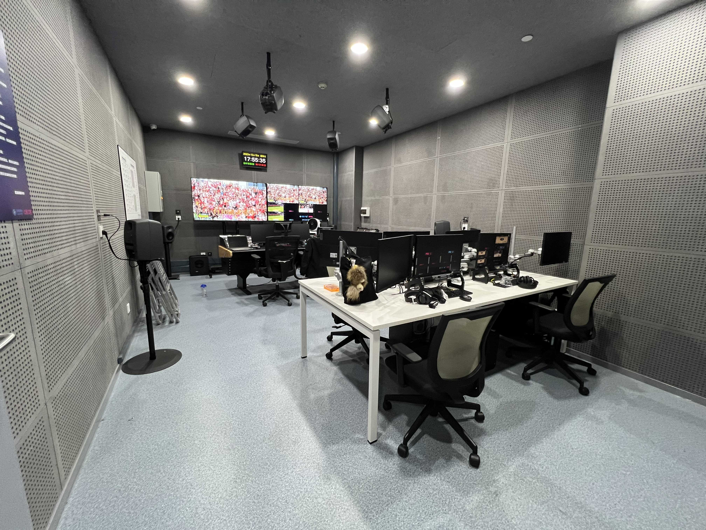
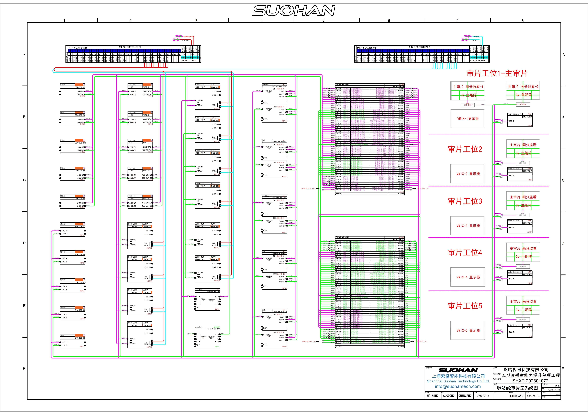

Integration and Delivery of Migu Video Live Delay PQC Quality Monitoring Center
Source: "Video Production" | Authors: Yao Shaokang, Zhang Yiwei (Migu Video Technology Co., Ltd.)
Introduction: With the expansion of Migu Video's business scope, a wide variety of live broadcasting formats—such as sports events, live shows, and secondary productions—have been fully rolled out. External signals like overseas sports events and program production processes feature extreme immediacy, harboring various uncertainties and security risks. To prevent unexpected and sensitive information during live broadcasts, it is crucial to reduce broadcasting risks within a short delay window, properly handle live signal quality monitoring, and execute emergency interventions in the fastest and most direct manner to insert safe filler videos or commercials. Therefore, Migu's live delay PQC monitoring system needs to make rapid judgments on video and audio content during live transmission, respond swiftly to sensitive material, switch to safe filler content, and guarantee secure broadcasting.
Our company, in partnership with Migu Video, has built a 4K UHD PQC monitoring center equipped with 5.1.4 immersive monitoring capabilities, escorting the secure broadcasting of numerous prestigious sports events.
1. System Composition and Design Concept
To meet the operational requirements and technical goals of Migu's live delay PQC monitoring system, the underlying infrastructure adopts a 4K-12G baseband architecture with backward compatibility for HD mode. The internal signal format features a resolution of 3840×2160, a frame rate of 50P, support for HDR high dynamic range, HLG, and BT.2020 wide color gamut. It fully satisfies the concurrent monitoring requirements of primary and backup signals across 5 workstations. From a technical standards perspective, the system remains compatible with Migu's existing studio cluster 4K SMPTE 2110 IP architecture, aligning with the "IP + Baseband" design philosophy.

2. System Subsystems
The Migu Live Delay PQC Monitoring System primarily consists of 6 subsystems: Signal I/O Processing System, Delay System, Signal Routing & Emergency Switching System, Monitoring & Multiviewer System, Filler Playback System, and Intercom System.

The Signal I/O Processing System includes codec systems and IP audio/video conversion systems (IPG), responsible for signal input/output and interconversion between IP formats and baseband signals. The Delay System performs signal delay processing and configures delay duration ranges. The Monitoring System handles signal presentation, supporting multiviewer technology, timecode display, source naming, and audio level meters. The Signal Routing & Emergency Switching System manages internal signal distribution and broadcast emergency handling, providing direct failover protection in emergencies. The Filler Playback System supports real-time recording, slow-motion replays, and loop filler playback to provide stable and reliable safety replacement content. The Intercom System fulfills full-duplex communication between Migu's broadcast control room, studios, dispatch center, and master control.

3. Working Principles and Design Highlights
The operating principle of the live delay PQC monitoring system relies on the baseband router as the core hub of the system architecture. IP signal sources are converted into baseband signals via the Signal I/O Processing System into the router, which handles signal distribution and routing assignment. Signals requiring delay are routed to the delay system with a configured delay duration. The delayed signals are then looped back into the router as input sources assigned to the next-stage I/O processing system for transmission.
Throughout the process, operators monitor and listen to the pre-delay video and audio to evaluate live content. If emergency broadcasting intervention is needed, operators can use the router emergency panel within the valid delay window to substitute the delayed live signal with a safe filler, achieving real-time content control until the broadcast is completely desensitized, after which normal live signals are restored.
Technical Highlights & Core Advantages:
- High Signal Format Compatibility: Combines baseband and IP forms, accommodating both general internet streaming IP protocols and ST 2110 uncompressed IP signals for flexible I/O structures.
- Multi-Channel Concurrent Review: Supports 5 independent PQC workstations simultaneously, each with independent monitoring environments, handling 10 concurrent primary/backup signal monitoring processes.
- Multi-Level Redundancy & Safety: Adopts a multi-level redundant architecture with primary/backup redundancy for core devices across all subsystems, dual-link structural configurations, and automated redundant power supply switching.



4. Conclusion and Achievements
The live delay PQC monitoring system is independently designed by Migu Video and jointly developed and constructed with Shanghai Suohan Technology Co., Ltd. It closely fits Migu's practical studio business scenarios and serves as a core system for live signal delay switching and content quality monitoring within Migu's content production workflow.
The system achieves comprehensive coverage of quality monitoring links in studio production workflows, leaving no blind spots or dead angles, and enforcing a "zero-tolerance" policy on ideological issues. Since its deployment, the system has operated steadily, successfully completing thousands of broadcast reviews, greatly enhancing live business security and ensuring smooth broadcasting operations.
